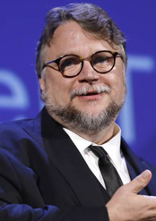
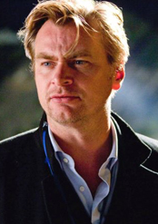
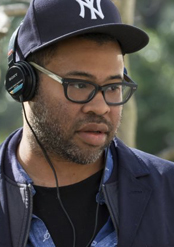
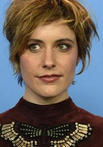
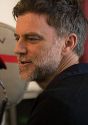

-
Ganador: Guillermo del Toro, por : La forma del agua
Guillermo del Toro Gómez (Guadalajara, Jalisco; 9 de octubre de 1964) es un director, guionista, productor y novelista mexicano, galardonado con el Premio Goya y varias veces con el Premio Ariel. En 2018 se hizo acreedor al Globo de Oro como mejor director por su película La forma del agua. Un mes después también se le galardonó como Mejor director y Mejor película en la 90ª edición de los premios Óscar por la misma película.
-
Christopher Nolan, por Dunkerque
(30 de julio de 1970) es un director de cine, guionista, productor y editor británico-estadounidense, nominado en cinco ocasiones al Óscar. En sus películas se tratan con frecuencia temas de la psicología, como la memoria en Memento o los sueños en Inception. Nolan saltó a la fama con su segundo largometraje Memento, basado en un relato corto escrito por su propio hermano, Jonathan Nolan, que luego adaptarían juntos a un guion convencional para rodar la película y por el cual fueron candidatos al Óscar en la categoría de mejor guion original.
-
Jordan Peele, por : Déjame salir
(21 de febrero de 1979) es un actor, comediante, director y guionista estadounidense.Jordan Peele saltó a la fama como actor gracias a su papel protagónico en la serie de comedia Key and Peele, producida por Comedy Central. Luego de participar en varias otras producciones como actor, decidió entrar al mundo de la dirección, dirigiendo, escribiendo y produciendo la película Get Out, que obtuvo críticas bastante positivas. Obtuvo el premio Oscar a mejor guión original en 2018
-
Greta Gerwig, por : Lady Bird
(4 de agosto de 1983) es una actriz y directora estadounidense. Se hizo conocida por su participación en el movimiento de cine mumblecore.12 Ha colaborado con el director Joe Swanberg en varios proyectos, incluyendo la película Nights and Weekends, escrita, dirigida y protagonizada por ambos. Gerwig debutó en el cine mainstream en 2011, con No Strings Attached y Arthur. En 2017, debutó como directora y escritora con su película Lady Bird, por la que recibió nominaciones de la Academia a Mejor Película, Mejor Dirección y Mejor Guion Original.
-
Paul Thomas Anderson, por : El hilo invisible
(Studio City, California; 26 de junio de 1970) es un director, guionista y productor de cine estadounidense. Ha dirigido ocho largometrajes: Sydney (1996), Boogie Nights (1997), Magnolia (1999), Embriagado de amor (2002), There Will Be Blood (2007), The Master (2012), Puro vicio (2014) y Phantom Thread (2017). Ha estado nominado a ocho premios Óscar por Phantom Thread (película, dirección), There Will Be Blood (Mejor director, Mejor película y mejor guion adaptado), Inherent Vice (Mejor guion adaptado), Magnolia (Mejor guion original) y Boogie Nights (Mejor guion original)